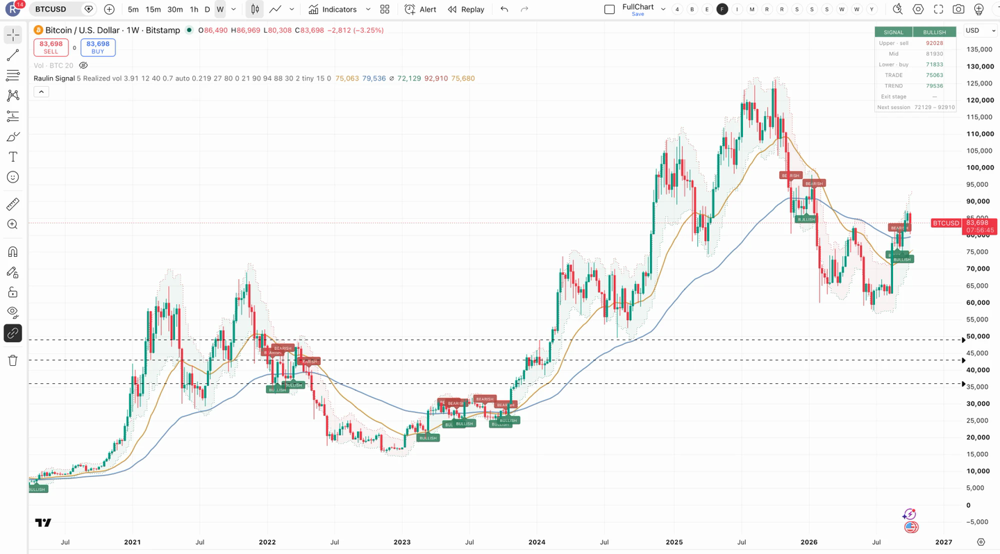

Der Vierjahreszyklus
Die ganze Tabelle seit 2013, warum alle dachten sie sei vorbei, was dagegen spricht — und warum ich trotzdem nicht darauf wette.
152 Wochen hoch, 52 Wochen runter
Dreimal hintereinander hat Bitcoin fast dasselbe gemacht: rund drei Jahre aufwärts, rund ein Jahr abwärts. Nicht ungefähr — auf wenige Wochen genau.
Länge der Phasen in Wochen, gemessen von Höchstkurs zu Tiefstkurs und zurück. Eigene Auswertung der Tages-Schlusskurse. Die letzte Zeile läuft noch.
Grün: aufwärts, rot: abwärts, Zahlen in Wochen. Die gestrichelten Linien sind die Halvings. Die letzte Abwärtsphase läuft noch — deshalb heller. Eigene Auswertung der Tages-Schlusskurse.
| Zyklus | Hoch | Tief | Abwärts |
|---|---|---|---|
| 1 | Dez 2013 | Jan 2015 | ~58 Wochen |
| 2 | 17.12.2017 · 19.800 $ | 15.12.2018 · 3.100 $ | 52 Wochen |
| 3 | 10.11.2021 · 69.000 $ | 21.11.2022 · 15.500 $ | 54 Wochen |
| 4 | 06.10.2025 · 126.198 $ | läuft | Woche 53 |
Dazu passt die Halbierung der Belohnung für die Miner, das sogenannte Halving: 2012, 2016, 2020, April 2024 — und die nächste erst wieder im April 2028. Alle vier Jahre.

Chart: TradingView, BTCUSD bei Bitstamp, Wochenkerzen, eigene Aufnahme. Die Signale sind meine eigene Auswertung, keine Empfehlung.
Warum alle dachten, es wäre diesmal vorbei
Vor diesem Zyklus waren sich fast alle einig, dass das Muster nicht mehr gilt. Die Begründungen waren gut:
- Mit den börsengehandelten Fonds kam ganz anderes Geld in den Markt — Vermögensverwalter statt Privatleute.
- Das Halving fällt relativ immer kleiner aus. Bei 450 neuen Bitcoin am Tag gegenüber einem Bestand von fast 20 Millionen bewegt eine Halbierung kaum noch etwas.
- Unternehmen und sogar Staaten halten Bitcoin inzwischen in der Bilanz. Nach Zahlen von ARK liegen rund 12 Prozent aller Bitcoin bei US-Fonds und börsennotierten Firmen.
Und trotzdem lief es bisher fast auf die Woche genau wie vorher.
Zwei Erklärungen, und niemand weiß welche
Die erste: Es gibt eine echte Mechanik. Das Angebot ist im Code festgeschrieben, die Nachfrage kommt in Wellen, und beides zusammen erzeugt diesen Rhythmus.
Die zweite: Genug Leute kennen das Muster und handeln danach. Dann erfüllt sich die Vorhersage selbst — nicht weil sie stimmt, sondern weil alle sie kennen. Das ist die unheimlichere Variante, weil sie bedeutet: Sie funktioniert so lange, bis genug Leute aufhören, daran zu glauben.
Ehrlich gesagt kann das bis heute niemand richtig erklären. Und genau das finde ich das Interessante daran.
Wo das Muster schon jetzt nicht passt
Der tiefste Kurs lag nicht jetzt, sondern im Juni
Nach dem Muster müsste das Tief im Oktober 2026 liegen. Tatsächlich war der tiefste Kurs dieses Zyklus im Juni 2026 bei rund 58.000 bis 59.000 Dollar. Seitdem steht Bitcoin über 40 Prozent höher.
Was man also sagen kann: Die Abwärtsphase endet nach dem Muster jetzt. Was man nicht sagen kann: „Der Boden ist diese Woche." Wer die Juni-Kerze kennt, widerlegt das in zehn Sekunden — und ich schreibe hier nichts hin, was so leicht auseinanderfällt.
Dagegen
Arthur Hayes hält den Vierjahreszyklus für tot. Treiber sei allein die weltweite Geldmenge.
Dagegen
Willy Woo hält einen Sechs- bis Achtjahreszyklus für möglich. Dann käme das Tief erst 2027.
Dafür
Benjamin Cowen erwartet den Boden im vierten Quartal 2026, am ehesten im Oktober.
Dafür
Kaiko Research sieht den Rückgang als Bestätigung des Zyklus.
Was ich stattdessen anschaue
Nicht das Datum, sondern die Flüsse. Das Angebot ist bekannt: rund 450 neue Bitcoin am Tag, festgeschrieben bis 2028. Die Nachfrage ist die Variable — und die kann man täglich nachlesen.
Am 7. und 8. Oktober sind zusammen rund 730 Millionen Dollar aus den Fonds abgeflossen. In der Woche davor flossen 241 Millionen hinein, die dritte Zuflusswoche in Folge. So schnell dreht das.
Mein Umgang damit: feste Rate, kein Timing. Wenn das Muster stimmt, kaufe ich sowieso in der richtigen Phase. Wenn es nicht stimmt, habe ich nichts verloren, außer einer Geschichte.